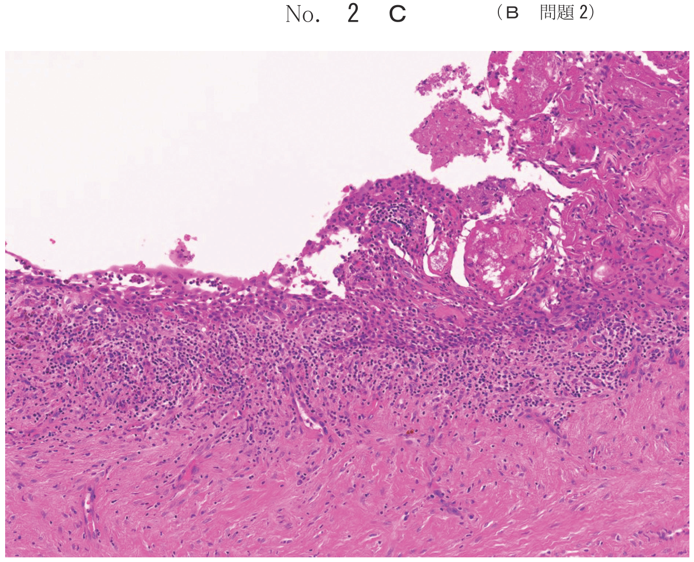

| 分類 | 原因 | 膿瘍形成 |
|---|---|---|
| 急性単純性（漿液性） | 物理的・化学的刺激 | なし |
| 急性化膿性（急性歯槽膿瘍） | 細菌感染 | あり |
原因が除去されると自然治癒する。
＝ 急性歯槽膿瘍
根尖歯周組織への細菌感染により、好中球の浸出を主体とした化膿性炎症が起こり、膿瘍を形成する。
| 病期 | 膿瘍の位置 | 主な症状 |
|---|---|---|
| 第1期（歯根膜期） | 歯根膜内 | 挺出感、咬合痛、打診痛 |
| 第2期（骨内期） | 歯槽骨内 | 拍動性自発痛、発熱、冷却で緩和 |
| 第3期（骨膜下期） | 骨膜下 | 症状最も激しい、硬く腫脹 |
| 第4期（粘膜下期） | 粘膜下 | 波動を触れる、痛み軽減 |
第3期（骨膜下期）：膿瘍内圧が最大に亢進し、自覚・他覚症状が最も激しくなる。腫脹部は波動を触れることなく硬く腫れ、強い圧痛を伴う。
第4期（粘膜下期）：骨膜が破れ膿瘍が粘膜組織下に広がる。腫脹は急激に大きさを増すが、痛みは軽減する。局所の腫脹は限局し、波動を伴う歯肉膿瘍を形成する。
| 項目 | 急性単純性 | 急性化膿性 |
|---|---|---|
| 原因 | 物理的・化学的刺激 | 細菌感染 |
| 自発痛 | なし〜軽度 | 拍動性、持続性 |
| 腫脹 | なし | あり |
| 波動 | なし | あり（粘膜下期） |
| 治療 | 咬合調整、原因除去 | 切開・排膿 |
24歳の男性。上顎左側中切歯根尖部の腫脹と自発痛を主訴として来院した。自発痛は2日前から強く、今朝はやや軽減したという。└1根尖相当部粘膜に波動を触れる。初診時の口腔内写真（別冊No.7A）とエックス線写真（別冊No.7B）とを別に示す。
診断と当日行うべき処置の組合せで正しいのはどれか。1つ選べ。

【解説】「波動を触れる」は膿瘍が粘膜下に達した急性化膿性根尖性歯周炎（粘膜下期）の所見。「自発痛が今朝はやや軽減」も粘膜下期の特徴（膿瘍内圧の放散による）。処置は切開・排膿が適切。a 急性単純性では腫脹・波動はない。b 歯根端切除は慢性期の外科処置。d, e は慢性の診断が誤り。